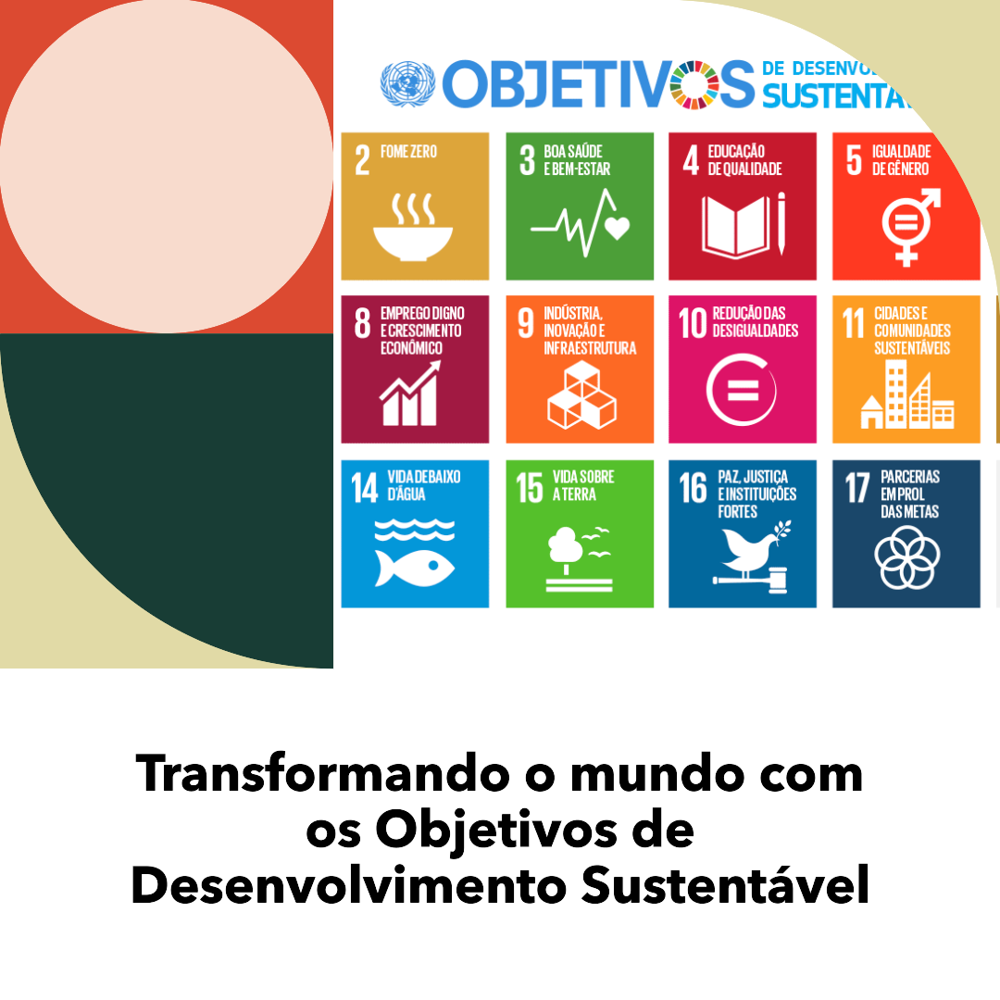
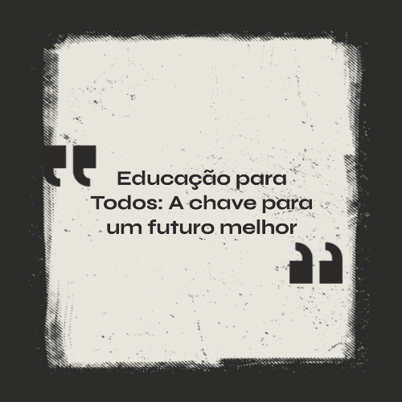
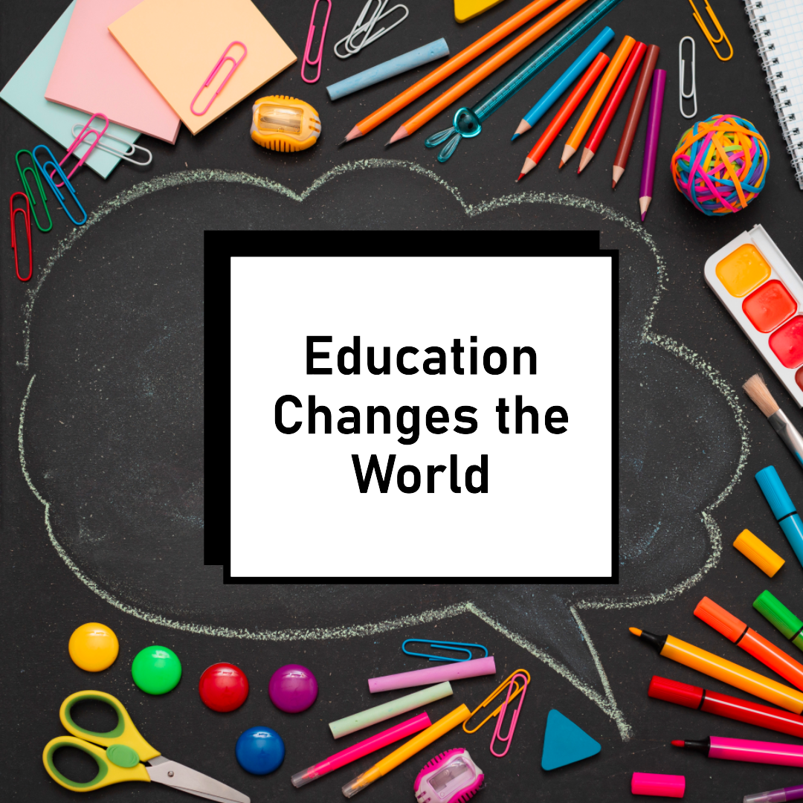

ODS 4 - Educação de qualidade
O que é uma ODS?
ODS significa Objetivos de Desenvolvimento Sustentável. São uma série de metas globais estabelecidas pelas
Nações Unidas para enfrentar os principais desafios sociais, econômicos e ambientais que o mundo enfrenta. Os
ODS foram adotados por todos os países-membros das Nações Unidas em setembro de 2015 e fazem parte da Agenda
2030 para o Desenvolvimento Sustentável.
A Agenda 2030 é um plano de ação ambicioso que visa erradicar a pobreza, proteger o meio ambiente e garantir
prosperidade para todos, promovendo a paz e a parceria global. Os ODS compreendem 17 objetivos e 169 metas
específicas que abordam uma ampla gama de questões, incluindo erradicação da fome, saúde e bem-estar, educação
de qualidade, igualdade de gênero, água limpa e saneamento, energia limpa, trabalho decente, inovação
industrial, redução das desigualdades, cidades sustentáveis, ação climática, vida submarina, entre outros.
Esses objetivos são interconectados e interdependentes, reconhecendo que a abordagem dos problemas globais
requer esforços conjuntos de governos, sociedade civil, setor privado e cidadãos de todo o mundo. Os países se
comprometeram a alcançar os ODS até 2030, monitorando regularmente o progresso e adotando medidas para
garantir um futuro mais sustentável para todos.
ODS 4
O Objetivo de Desenvolvimento Sustentável 4 (ODS 4) é um dos 17 objetivos estabelecidos pelas Nações Unidas
como parte da Agenda 2030 para o Desenvolvimento Sustentável. O ODS 4 tem como meta garantir uma educação
inclusiva, equitativa e de qualidade para todos, promovendo oportunidades de aprendizagem ao longo da vida
para todas as pessoas, independentemente de idade, gênero, etnia, origem social ou qualquer outra
característica.
A ODS 4 abrange diversos aspectos da educação, desde a educação infantil até a educação superior e a formação
profissional. Além disso, enfatiza a importância de promover oportunidades de aprendizado para todos, bem
como a igualdade de acesso para meninas e mulheres, grupos marginalizados e pessoas com deficiência.
Para alcançar a ODS 4, é necessário um esforço conjunto entre governos, sociedade civil, setor privado e
organismos internacionais, com políticas educacionais adequadas, investimentos estratégicos e ações concretas
voltadas para o desenvolvimento educacional inclusivo e sustentável em todo o mundo.
O ODS 4 é um objetivo ambicioso, mas é essencial para alcançar o desenvolvimento sustentável. Todos nós temos
um papel a desempenhar para garantir que todas as pessoas tenham acesso a uma educação de qualidade. O ODS 4
tem uma série de metas específicas, clique e saiba mais
ODS 4 - Importância da Educação de Qualidade para Todos!
A educação é a base para o desenvolvimento humano, econômico e social de qualquer nação. Ela desempenha um
papel crucial na capacitação das pessoas e no avanço de uma sociedade mais justa e igualitária.
Algumas razões
pelas quais a educação de qualidade é fundamental: Redução da pobreza e desigualdade,
capacitação das mulheres, saúde e bem-estar, desenvolvimento econômico, tolerância e compreensão, resiliência
e sustentabilidade, empoderamento social e político e por fim mas não menos importante a preparação para o
futuro. O ODS 4, ao colocar a
educação de qualidade no centro da agenda de desenvolvimento sustentável, reconhece a sua importância vital
para alcançar um futuro mais próspero e sustentável para todos.
Para que esse objetivo seja
alcançado, é
necessário um esforço conjunto de governos, organizações, comunidades e indivíduos para garantir que todas as
pessoas tenham acesso a uma educação inclusiva, equitativa e de qualidade, independentemente de sua origem ou
condição socioeconômica. Somente assim poderemos construir um mundo mais justo, igualitário e próspero para as
gerações presentes e futuras.
A educação pode mudar o mundo!
Uma educação de qualidade pode ajudar as pessoas a:
Aprender habilidades e conhecimentos necessários para encontrar emprego e contribuir para a economia;
Tomar decisões informadas sobre sua saúde, seu bem-estar e seu meio ambiente;
Ser cidadãos ativos e participar da democracia;
Resolva conflitos de forma pacífica;
Valorize a diversidade e a inclusão;
Proteger o meio ambiente.
A educação também pode ajudar a reduzir a pobreza, a promover a igualdade de gênero e a melhorar a saúde. Uma
pessoa com educação é mais propensa a estar em boa saúde, ter um emprego decente e ganhar um salário justo.
Ela
também é mais propensa a participar da vida pública e tomar decisões que beneficiem sua comunidade.
Existem diversas formas de contribuir para a educação de qualidade. Algumas delas são:
Capacitar e valorizar os professores;
Adotar uma plataforma de ensino;
Estimular o protagonismo dos alunos;
Desenvolver as habilidades socioemocionais do aluno, entre outras.